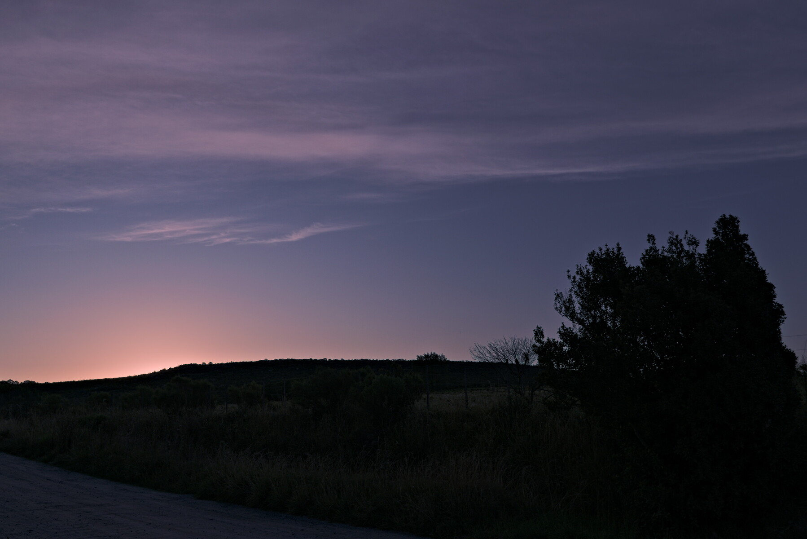
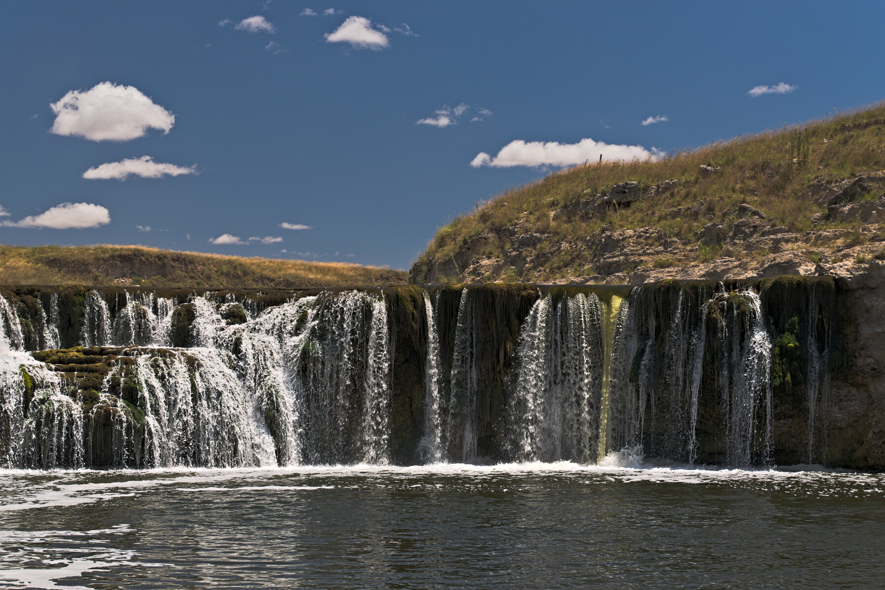

Con sonorative intento encontrar maneras de hacer sonar a las imágenes. El trabajo es bastante artesanal. La idea es construir una onda sonora a partir de los datos guardaddos en cada pixel. Los programas que lo hacen (porque hacerlo a mano sería muy cansador) están escritos en Python y están disponibles en GitLab.
Los programas barren los datos de la imagen horizontal o verticalmente. En cada pixel se encuentran con los datos de color (un número si la imagen está en escala de grises, tres números (rojo, verde y azul) si la imagen es color). Distintos algoritmos, a partir de estos números, determinan la elongación de una muestra de la señal que será guardada en un archivo de audio.
En este caso el color define directamente la elongación de cada muestra de la señal de audio.
Veamos qué pasa si la foto es más interesante.
En este caso el color define directamente la frecuencia de la función utilizada para determinar la elongación de la muestra.
Otra vez, probamos con una imagen más interesante.
En este caso el color define la amplitud de una serie de parciales prestablecidos.
Probemos también este algoritmo con un paisaje.
Si te interesa saber un poco más cómo funciona pero no querés leer código escribirme (acordate que también me encontrás en telegram o mastodon).